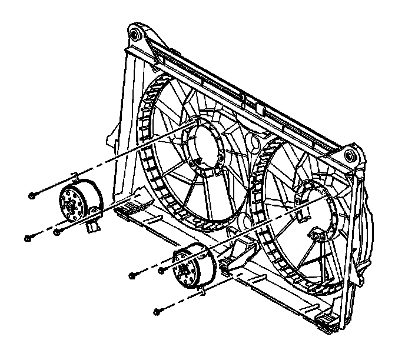

Radiator Cooling Fan Motor: Service and Repair
Engine Coolant Fan Motor Replacement
Removal Procedure

1. Remove the cooling blade(s). Refer to Engine Cooling Fan Replacement.
2. Remove the cooling fan motor bolts.
3. Remove the cooling fan motor(s).
Installation Procedure
1. Install the cooling fan motor(s).
Notice: Refer to Fastener Notice.
2. Install the cooling fan motor bolts.
Tighten the bolts to 10 N.m (89 lb in).
3. Install the cooling fan blades. Refer to Engine Cooling Fan Replacement.